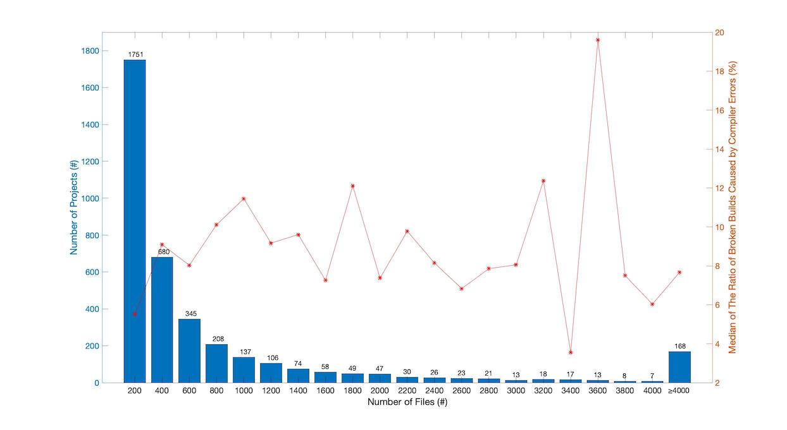
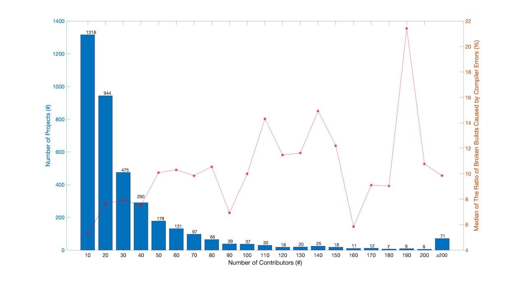

We analyzed the distribution of the 171,043 broken builds that were caused by compiler errors across the 3,799 projects.
960 (25.3%) projects had no compiler errors (omitted from the above figure).
1,462 (38.5%) projects had at most 10 broken builds that were caused by compiler errors.
463 (12.2%) projects had (10, 20] broken builds that were caused by compiler errors.
282 (7.4%) projects had more than 100 broken builds that were caused by compiler errors.
Therefore, the broken builds (or compiler errors) are not evenly distributed across projects.
We will add more detailed analysis in the paper.

We analyzed the sizes (in terms of the number of source code files) of projects as well as their correlation to broken builds caused by compiler errors.
1,751 (46.1%) projects had at most 200 source code files.
678 (17.8%) projects had more than 1,000 source code files.
In particular, we find no significant correlation between the number of source code files and the ratio of broken builds caused by compiler errors.
We will analyze the sizes in terms of lines of code in the paper, which is too time-consuming for rebuttal.

We analyzed the number of contributors of projects as well as their correlation to broken builds caused by compiler errors.
1,316 (34.6%) projects had at most 10 contributors.
596 (15.7%) projects had more than 50 contributors.
The projects with at most 10 contributors had a lower median ratio of broken builds caused by compiler errors than the projects with more than 10 contributors,
and the difference is statistically significant (p = 0.0318 in one-way ANOVA test).
We will add this analysis in the paper.